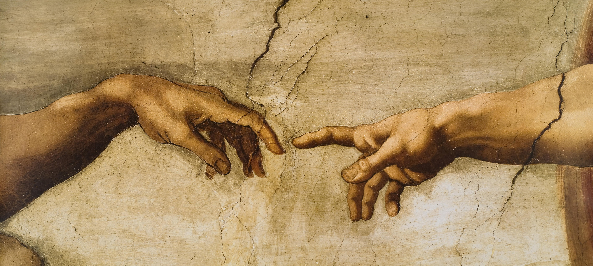

A criação de Adão de Michelângelo Buonarotti
Deus é representado como um ancião barbudo, envolto em um manto que divide com alguns anjos. Seu braço esquerdo está abraçado a uma figura feminina, normalmente interpretada como Adão e Eva – que ainda não foi criada e, figuradamente, espera no Céu para ganhar uma forma humana. O braço direito de Deus está esticado para criar o poder da vida de seu próprio dedo para Adão, o qual está com o braço esquerdo estendido em contraposição ao do criador. Os dedos de Adão e de Deus estão separados por uma pequena distância.
A composição é obviamente artística e não literal, já que Adão é capaz de alcançar Deus mesmo antes de ter ganho vida. Pela mesma razão, Eva é vista representada antes de sua própria criação. Esse motivo levou algumas pessoas a acreditar que a figura feminina fosse a suposta primeira esposa de Adão, Lilith; entretanto, essa interpretação não faz o menor sentido, já que, em sua lenda, Lilith também teria sido criada depois de Adão. As posições de Deus e Adão, a pintura do braço direito de Deus e esquerdo de Adão são quase idênticas e representam o fato de que, como diz o Gênesis 1,27, "Deus criou o homem à sua imagem e semelhança".[3]
O dedo indicador de Adão, a mais famosa representação do afresco, não é de facto um trabalho de Michelangelo. Ele foi danificado durante reparos de um desabamento em meados do século XVI e foi reprimido e repintado por um restaurador do Vaticano.
Por outra perspectiva, alguns estudiosos das artes dizem que uma mensagem é imposta subliminarmente. Quando, olhado de forma diferente, Deus estaria representado dentro de um cérebro e, com o seu toque à Adão, o racionalismo seria representado de forma escondida.
Similaridade anatômica
Existem várias teorias sobre o significado da composição original de "A Criação de Adão", levantadas principalmente por causa do amplo conhecimento que Michelangelo possuía em Anatomia. Em 1990, um médico chamado Frank Lynn Meshberger, em artigo no Journal of the American Medical Association, afirma que a figura em que Deus está apoiado tem o formato anatómico de um cérebro, incluindo o lobo frontal, nervo ótico, glândula pituitária e o cerebelo. Também observou que o manto branco de Deus tem o formato de um útero, e que a écharpe verde que sai de seu ventre poderia ser um cordão umbilical. O braço de Deus representa também, o "terceiro olho" também chamado de "olho Divino".